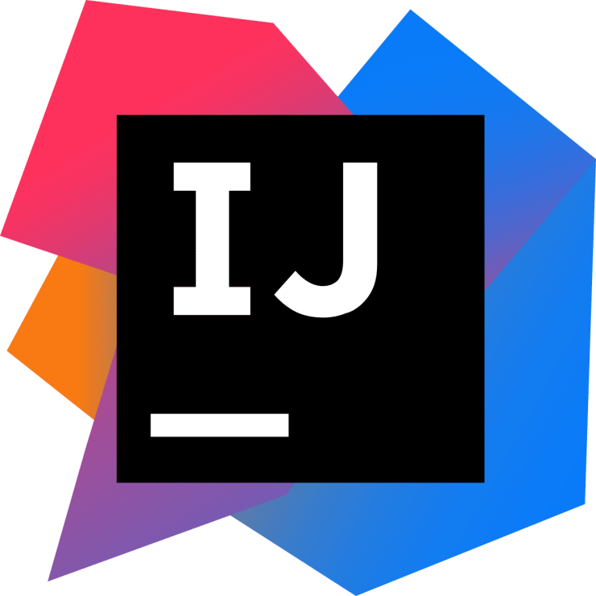
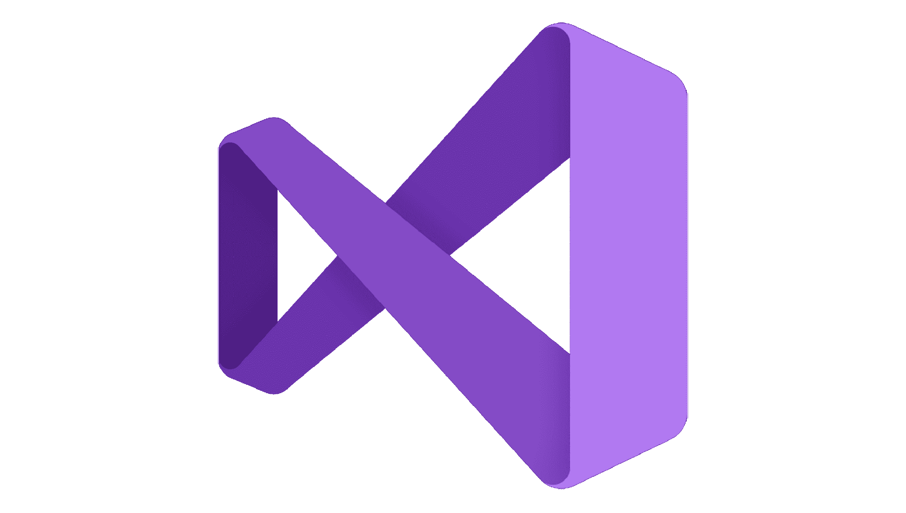
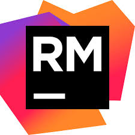

Compiladores y IDEs

PyCharm
Un IDE potente y profesional para desarrollo en Python.
Requerimientos Técnicos
- Sistema Operativo: Windows, macOS, Linux
- RAM: 4 GB mínimo (8 GB recomendado)
- Espacio en Disco: 2.5 GB
- Versión de Python: 3.6 o superior

Visual Studio Code
Un editor ligero pero potente con soporte para múltiples lenguajes.
Requerimientos Técnicos
- Sistema Operativo: Windows, macOS, Linux
- RAM: 1 GB mínimo (2 GB recomendado)
- Espacio en Disco: 200 MB
- Extensiones: Soporte para Python, JavaScript, Java, C#, Ruby, etc.

IntelliJ IDEA
Un IDE profesional para desarrollo en Java y otros lenguajes.
Requerimientos Técnicos
- Sistema Operativo: Windows, macOS, Linux
- RAM: 4 GB mínimo (8 GB recomendado)
- Espacio en Disco: 2.5 GB
- Versión de Java: JDK 11 o superior

Visual Studio
Un IDE completo para desarrollo en C# y .NET.
Requerimientos Técnicos
- Sistema Operativo: Windows 10 o superior
- RAM: 4 GB mínimo (8 GB recomendado)
- Espacio en Disco: 20 GB
- Versión de .NET: .NET 5.0 o superior

RubyMine
Un IDE especializado para desarrollo en Ruby.
Requerimientos Técnicos
- Sistema Operativo: Windows, macOS, Linux
- RAM: 4 GB mínimo (8 GB recomendado)
- Espacio en Disco: 2.5 GB
- Versión de Ruby: 2.6 o superior